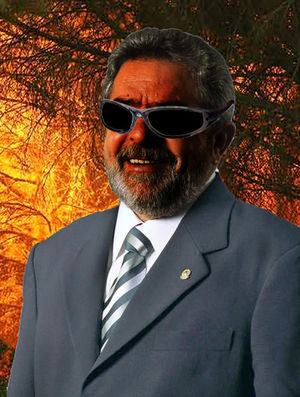

Humano
 De: La Frikipedia, la enciclopedia extremadamente seria.
De: La Frikipedia, la enciclopedia extremadamente seria.
|
|
En Proceso de Fusión
Este artículo se encuentra actualmente en proceso de fusión con el siguiente artículo: Ser Humano, si no eres el editor no vayas a meterle mano hasta que termine de ser fusionado, en otras palabras, no entres acá.
|
De la serie grandes personajes:
| Nacimiento
|
Desde que la tierra comenzo a contaminarse.
|
| Muerte
|
¡Jamás!
|
| Ocupación
|
contaminar,hacer guerras, crear antimateria,jugar a la play...
|
| Nacionalidad
|
Mundial.
|
| Malo o bueno
|
Ambos.
|
| Atentados contra la humanidad
|
todo lo imaginable.
|
| Religión
|
muchas, aunque predomina el McCristianismo.
|
| Notas
|
Se rumorea que no va sobrevivir mucho tiempo.
|
«Ahora ya se que sintio Bill Gates al desarrollar Hasefroch ME...»
~ Dios el dia que este creo al humano.
Dícese del mono sin pelo, sin cola, con hombros, sin vergüenza y con un rabo que no sabe usar. Se dice del humano que es el único animal que tropieza dos veces con la misma piedra y le echa la culpa a la piedra. Se afirma también que es el único animal capaz de perder la razón y el único que es infeliz teniendo dinero y sexo.
Los estudios afirman que el género humano existe desde hace unos cuatro millones de años, aunque después de examinar el carnet de Manuel Fraga se ha ampliado la cifra a los siete millones.Ademas se a descubierto que Beikatal los provee de felicidad con no se que
Terminología y otros
Hemos de ser exclusivistas y mirar la cuestión desde un punto de vista científico. Dividamos a los hombres:
- Por una parte solemos leer en los botes de champú que se puede dividir al hombre según distintos métodos, creencias, etc. La división tradicional es el binomio hombre-mujer.
- Sabemos que, por otra parte, están blancos y negros; mundo civilizado y mundo tercermundista. La mente actual del ser humano occidental trata de evitar la identificación con grupos minoritarios, aunque uno mismo sea negro.
- Brazos, piernas, sexo, tronco y cabeza es otra posible división, como lo es orejas, cuello y lo demás, u otros muy liosos y/o peligrosos para la salud propia y pública.
Clasificaciones internas
Otros estudios, igualmente respetables (o eso dicen) argumentan fehacientemente la subdivisión de la especie en las siguientes ramas evolutivas:
- Hombres: Representantes de los cromosomas XY, a este sub-género pertenece, por mayoría, la cúpula de Gobierno y Poder. Entiéndase este dato como una de las coincidencias existenciales al más puro estilo mundodisco
- seres mitológicos los cuales poseen inmensas habilidades una vez tienen muchas tareas (hablar y mascar chicle, ello marcó un hito para la ciencia)
- Políticos: Hombres en su mayor parte y algunas mujeres que aparecen en VOGUE, presentan una clara tendencia al uso de palabras retorcidas y es recomendable no darles jamás la espalda.
- Informáticos: Mírese en un espejo (o en la previsualización de la webcam.)
- Acefalus Poetae: también conocidos como poetas acéfalos unicelulares y que de asuntos organizativos saben más bien poco.Véase también Carne de Cañón.
- Rive y Revan: Elegidos para mantener a raya a los anteriores mencionados y que no conquisten el mundo con su estupidez.Cazadores de canis sin descanso, campeones en atropellar viejas corriendo, desertores de la humanidad, a los únicos que doraemon les tiene miedo. También llamados supervivientes del efecto 2050 ya que consiguieron sobrevivir a la invasión de los canis en Plasencia.
- Otaku: La sub especie de humanos más inteligentes por ser capaces de entender dos idiomas (Español y japonés)
- Emos: Humanos que se autodestruyen. (el resto de los humanos no les soporta)
- Frikipedistas: Es una raza de humanos superiores con apariencia atletica , son mas atractivos , inteligentes y que los humanos normales ademas tienen la capacidad de volar , súper fuerza y vista de aguila. Todos son 100% heterosexuales. Estan desarrollando naves espaciales para ir a conquistar el planeta de los navi. Hacen sus servicios a la comunidad publicando
pendejadas temas inutiles en esta pagina y recogen mierda de perros los domingos para que a nadie se le joda el día.
Nota: la inclusión de los japoneses debe ser discutida aún más a fondo, aún no se ha decidido si son o no humanos.
Ser humano occidental: funciones
- Si persistimos en dividir, podemos decir que en Occidente hay dos clases de personas, los conductores y los peatones. Es cierto que, dependiendo del contexto concreto, y según el tipo de droga ingerida, podemos dividirlos en mujeres,hombres y travestidos, (el hombre se hace invisible) con lo cual habremos de estar más atentos; mujeres guapas y feas, etc.: podríamos continuar hasta el infinito.
- Si algo destaca en el ser humano es su atención, en cierto momento de su vida, en lograr las cosas de cara al presente; una vez pasados por la Máquina de Occidentalización, esto se mueve de cara al futuro, presuntamente porque un día podrás detenerte a disfrutar de tus compras.
- El objeto final es mantener en pie lo que hay; no obstante hay quien no aprecia esto, o le gusta demasiado y se quiere comer todo el pastel, y se dedica a convencer a gente de pueblo para "destruir este horrible mundo", mientras ellos se forran.
 La arena y el mar son simbolos de ambición y proselitismo, segun Nietzsche cuando se volvió loco.
Evolución
Su evolución desde el austrapitolecus, ha sido la siguiente:
- Australopeterus
- Homo Sífilis
- Homo Eructos
- Homo Neandertal y tal (también conocido como Homo Luisaragonesus)
- Homo Casisapiens
- Homo Cocacolus
- Homo Pepsicolus (Tres mil veces mas destrutivo)
- Homo sapiens sapiens
- Homo fantosus (diabeticos fantosos)
- Homo gorditus
- Homer Simpson
- Homo akurunus
- Y despues de muchas evoluciones mas para alcanzar la perfección el Frikipedius sapiens al cubo por 10
Este último puede dividirse en varios grupos, conocidos como:
Homo Sapiens Sapiens Sapiens Sapiens sapiens, o Eduard Punset, la evolución superior del hombre, oremosle.
- Homo bobus: Gran mayoría mundial, concentrada en un 60% en Estados Unidos
- Homo zapping: Humanos indecisos que cambian constantemente de canal de televisión buscando algo bueno en sábado, cuando todos sabemos que eso no existe.
- Homo géneus: Minoría aplastante. Son un tipo de humano al que le gusta mezclarse con la gente de forma que no se note que existe. No se sabe si es que realmente hay pocos, o que simplemente no se les ve.
- Nomo sapiens: Son un tipo de hominido originario de Liliput, se diferencia de los demás homínidos por medir apenas la cuarta parte de los demás.
- Homo nopiens: Llamados también cadáveres. Filosóficamente hablando, no existen, ya que si "pienso, luego existo", si no piensas, no existes, ni luego, ni ahora, ni nunca. Ciertos de estos humanos, por alguna razón, se levantan de sus tumbas para vagar por el mundo sin hacer nada. Hay dos tipos: los cadáveres con presupuesto, lo cuales prescinden de su cuerpo para pasar a ser fantasmas. No confundir con fantasmas vivos, estos son otro tipo de cosa. También están los de poco presupuesto, que se levantan con el cuerpo a pedazos, llamados zombies. Los zombies son algo gilipollas, feos, y repugnantes. Si alguno te da la mano, es probable que puedas quedártela.
- Emosexual: Son casi humanos, casi, en realidad son humanos asexuales ya que a dia de hoy nadie sabe quienes llevan los pantalones en casa. De todas formas, a nadie le importa dada su corta esperanza de vida, ya que nacen con una cuchilla de afeitar debajo del brazo.
- Homo perigüeñus: Vease bolsero
- Homo pezensis: siempre se ha sospechado que en el mar había un especie de hombres-pez nacidos de marineros perdidos en la mar y ocupantes de pateras naufragadas. En Pekín 2008 se descubrió la primera y más fidedigna imagen de un hombre-pez: Michael Phelps.

Michael Phelps es un hombre pez en apariencia, realmente es un experimento genético de la nasa y ucrania con poderes suprahumanos, supuestamente es una especie totalmente nueva
Curiosidades sobre la especie humana
- El ser humano es inteligente, la excepción es quien tiene un apèndice inútil colgando de la entrepierna, aunque hay quien lo niega La Mente es Una Caja Negra sin Sentido.
- El ser humano macho tiene la curiosa habilidad de poder desconectar su cerebro ante temas importantes. Se piensa que no son capaces de procesar información que no contenga las palabras: mujeres(los más poderosos y habilidosos seres humanos), coches, deportes y/o halagos hacia ellos mismos.
- El ser humano es único a la hora de crear algo destructivo y en lugar de no usarlo, lo usa y luego dice que fue un error el crearlo.
- El ser humano no piensa pero sí existe, ya que las piedras no piensan y sí existen.
- Todo ser humano padece la enfermedad de Benjamin Button al reves.
- El ser humano cuando usa su cerebro es solo para 4 cosas:
- Cómo follar.
- Cómo descubrir nuevas formas de matar a sus congéneres humanos.
- Usar la computadora.
- Cualquier combinación entre estas tres.
La especie humana y la Estupidez
Tenemos pruebas irrefutables de que la especie humana se dirige inexorablemente hacia la estupidez.
Aquí van algunas instrucciones auténticas que aparecen en las etiquetas de diversos productos de consumo y en las que me baso para vaticinar el próximo e inevitable final de la inteligencia humana:
- En una caja de jabón Dove:
- UTILIZAR COMO JABÓN NORMAL. (¿Cómo se usan los jabones... NO normales...?)
- En algunas comidas congeladas Findus:
- SUGERENCIA PARA SERVIR: DESCONGELAR PRIMERO. (Pero sólo es una sugerencia...)
- En el postre Tiramisú marca Savory (impreso en la parte de abajo de la caja):
- NO DAR LA VUELTA AL ENVASE. (Ooooooh, demasiado tarde!)
- En un paquete de una plancha Rowenta:
- NO PLANCHAR LA ROPA SOBRE EL CUERPO. (Sin comentarios)
- En un jarabe contra la tos para niños:
- NO CONDUZCA AUTOMÓVILES NI MANEJE MAQUINARIA PESADA DESPUÉS DE USAR ESTE MEDICAMENTO. (¡¡pucha, que la explotación infantil acabó hace años!!)
- En un cuchillo de cocina coreano:
- IMPORTANTE: MANTENER FUERA DEL ALCANCE DE LOS NIÑOS Y LAS MASCOTAS. (¿¿Pero qué clase de mascotas tienen los coreanos??)
- En un bote de pastillas para perros dice:
- "El alcohol intensifica sus efectos y además desaconsejan conducir o manejar maquinas peligrosas”. (Avisado estás, si les das estas pastis al perro esconde las llaves del coche, la birra y sobretodo: ¡¡¡LOS CUCHILLOS COREANOS!!!)
- En una tira de luces de Navidad fabricadas en China:
- SÓLO PARA USAR EN EL INTERIOR O EN EL EXTERIOR. (¡¡Ojo, en el interior o en el exterior!!... estos chinos y sus dimensiones espacio/tiempo...)
- En un paquete de frutos secos de American Airlines:
- INSTRUCCIONES: ABRIR EL PAQUETE, COMER LAS FRUTOS SECOS. (Uff, ¡gracias!)
- Inquietante consejo en un estuche de destornilladores de precisión:
- Avisa en inglés de que no deben insertarse en el PENE (Estos americanos son unos cachondones… jeje!!!)
- En la caja de un televisor Wauta TV340:
- ANTES DE MIRAR UN PROGRAMA ENCIENDA EL TELEVISOR. (¡¡pero claroo!!...sino como?? )
- En el manual de un teclado RAZOR Keyboard XP:
- SI SU TECLADO NO FUNCIONA, ESCRÍBANOS UN E-MAIL A:.... (¿¿Cómo mierda les escribo un email?? ¿¿señales de humo??)
- En una sierra eléctrica sueca:
- NO INTENTE DETENER LA SIERRA CON LAS MANOS O LAS PIERNAS. (Con la cabeza la detengo, mejor!!!)
-A todos le gustara la musica de One Direction
- En una caja de leche Eroski:
-INFORMACIÓN PARA ALÉRGICOS: CONTIENE LECHE(Ah vale, no lo sabia, casi me la bebo.
¿Sabías que...?
- ...No hay nada más que decir del ser humano actual?
- ...Hablando de seres humanos, los pelirrojos sufren en secreto de incontinencia (se les escapa la orina)? Es debido a un factor genético heredado de la primera mutación hombre-legumbre.
- ...Todos los seres humanos tienen tres ojos? El ano es el primero, y los siguientes, que son menos necesarios, los tenemos entre la frente y los pies. ¡¡¡Búscalos!!!
- ... ...
- ...Spiderman, Batman y otros mitos de la masculinidad gay comparten el mismo ADN que Adán? Zapatero (ese presidente de la Patria) lo vendió al Díábolo, Lucifer o FROGJSTEMOSNA (nombre bíblico según las escrituras profanas del
Jesús) a cambio de chuches.
- ...La humanidad sera destruida por nosotros mismos y cuando llegue ese momento reinaran los delfnes?
- ....El ser humano es el unico ser vivo que tropieza dos veces con la misma piedra,le echa la culpa a la misma piedra y despues golpea a la inocente piedra hasta que le sangra la mano?
Si te da la gana puedes mirar esto también
Autor(es):
- Krusher
- Nexo
- Fordus
- Er Makina
- Peewack
- Mu
- Cortocircuito
- Serumax
- Emedeme
- Hari Seldon
Frikipedia 2005-2016, Licencia
GFDL 1.2 - Extraído por FrikiLeaks